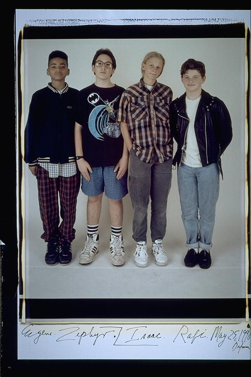

Pals: Boys Who Grew Up Together
elsadorfman.com/pals
Isaac: You'll never see a picture of Zephyr and me by ourselves. We never hung out together. He was all about sports (and very good) and I wasn't. However, in school, all our friends were in another class, so we bonded (that might have been a year or two after or before this photo. I'm not too good at dating these things). At any rate, it's too bad we never took one together. I consider him a very dear friend and a great guy. Also in this picture, Rafi was experimenting with time-travel. He'd just come back from the 50's and didn't have time to change clothes.
Aldo: Zephyr and Isaac for some reason always ended up in the same class. The other eight or so friends were always together. So these two have a unique friendship. While they never hung out exclusively, they got to know each other really well. I remember they used to make fun of each other all the time. And they both liked the same girl; I don't know if they'll fess up to it, but it's true.

elsad@comcast.net